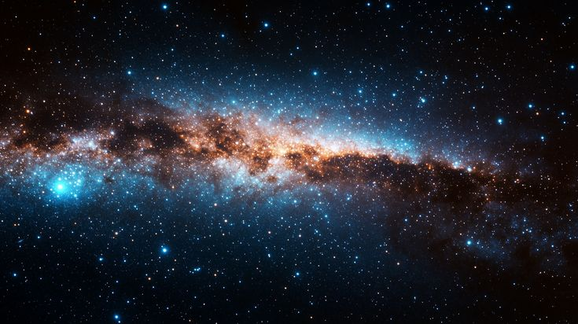
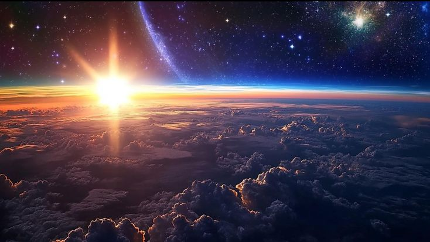

“Two things are infinite: the universe and human stupidity; and I’m not sure about the universe.”
Albert Einstein

Universe ( စကြာဝဠာ ) ဆိုသည်မှာ space ( အာကာသများ ) ၊ အချိန်များ ၊ အရာဝတ္တုများ နှင့် စွမ်းအင်များအားလုံး အမှန်တကယ်တည်ရှိနေသော နေရာ ( သို့ ) အရာတစ်ခုဖြစ်သည်။ Universe ထဲတွင် ဂြိုလ်များ ၊ ကြယ်များ ၊ galaxy များ ၊ atom များ နှင့် အခြားမမြင်နိုင်သောအရာများဖြစ်သော dark matter နှင့် dark energy များလည်းပါဝင်သည်။ စကြာဝဠာသည်လွန်ခဲ့သောနှစ်ပေါင်း ၁၃.၈ ဘီလီယံ၌ Big Bang ( မဟာပေါက်ကွဲမှု ) နှင့်အတူ စတင်ဖြစ်ပေါ် လာသည်ဖြင့် သိပ္ပံပညာရှင်များဟာ ယုံကြည်ခဲ့ကြသည်။ ဤအရာသည် အလွန်ပူပြင်း၍ သိပ်သည်းဆများသောအမှတ်တစ်ခုမှ ကျယ်ပြန့်စွာပျံ့နှံ့လာသည်မှာ ယနေ့ထိတိုင်ဖြစ်သည်။ အာကာသသည် ၎င်းကိုယ်တိုင် ကြီးမားကျယ်ပြန့်လာသည့်အတွက် galaxy များဟာလည်း တစ်ခုနှင့်တစ်ခုဝေးကွာလာရချင်းဖြစ်သည်။ ဥပမာအားဖြင့် ပူဖောင်းတစ်လုံးကို လေမှုတ်သွင်းသည့်အခါ မျက်နှာပြင်ပေါ် ရှိအမှတ်များ အကွာအဝေး ကျယ်ပြန့်သွား ကဲ့သို့ပင်ဖြစ်သည်။

စကြာဝဠာသည် မည်သို့ပင်ကြီးမားသည်ဖြစ်စေ သိပ္ပံဆိုင်ရာ pattern နှင့် law များအရ gravity, relativity, နှင့် quantum mechanics ကဲ့သို့သော အရာများကိုကျွန်ုပ်တို့လေ့လာနိုင်သည်။ Black hole သည် အာကာသအတွင်းရှိအချိန်များအား အပြောင်းအလဲလုပ်ပေးသည်မှ Atom များသည်လည်း စွမ်းအင်များနှင့်အတူ တုန်ခါနေပြီး ထိုအရာများအားလုံးသည် သိပ္ပံဆိုင်ရာ pattern နှင့် law များအရ တစ်ခုနှင့်တစ်ခု ချိတ်ဆက်နေကြသည်။ ကျွန်ူပ်တို့၏နေအဖွဲ့အစည်းသည် Milky Way Galaxy အတွင်း၌ အလွန်သေးငယ် အစက်တစ်ခုသည်။ ဤအရာသည် သန်းပေါင်းများစွာသော Galaxy များထဲမှတစ်ခုဖြစ်ပြီး ၎င်းကိုယ်တိုင် ဖြေးညှင်းစွာရွေ့လျားနေသည်။ စကြာဝဠာသည် အလွန်ကြီးမားသည့်အတွက် အလှမ်းကွာဝေး
သော Galaxy များမှအလင်းများသည် ကမ္ဘာမြေပေါ်သို့ရောက်ရန် နှစ်ပေါင်းသန်းချီဖြတ်သန်းလာရသည်
စကြာဝဠာသည် အရာဝတ္ထုတစ်ခုသာလျှင်မဟုတ်ပဲ လူသားများစူးဆန်းလေ့လာနိုင်သော လျှို့ဝှက်
ဆန်းကျယ်ဖွယ်ရာ နေရာတစ်ခုလည်းဖြစ်သည်။ ထိုသို့ဆိုရမည်ဆိုလျှင် စကြာဝဠာသည် အဘယ်ကြောင့်
တည်ရှိနေရသနည်း ၊ စကြာဝဠာ၌ ကျွန်ုပ်တို့တွေသာ ရှိခြင်းလား ၊ ဘယ်အချိန်၌ အဆုံးသတ်သွားမည်နည်း ၊
အစရှိသော မေးခွန်းများအား သိပ္ပံပညာရှင်များ နှင့် အတွေးခေါ်ပညာရှင်များသည် ကြိုးစားဖြေရှင်းနေကြသည်။ ဆက်လက်၍တည်ရှိသွားမည်ဖြစ်စေ တစ်နေ့တွေအဆုံးသတ်သွားမည်ဖြစ်စေ
စကြာဝဠာနှင့်ယှဉ်လျှင် ကျွန်ုပ်တို့လူသားများသည် အင်မတန်သေးငယ်ကြသည်။ သို့ပေမယ့် လူသားများသည် ၎င်းအား ဖြေရှင်းရန် နားလည်ရန် ကြိုးစားနိုင်ကြသည်။
စကြာဝဠာသည်ပျမ်းမျှအားဖြင့်နှစ်ပေါင်း၁၃.၈ဘီလီယံကြာမြင့်ပြီဖြစ်သည်။ထိုသို့ကြာမြင့်ကြောင်းကိုသိပ္ပံပညာရှင်များသည် သက်တမ်းအမြင့်မားဆုံးသောကြယ်များကိုကြည့်ခြင်းဖြင့်သော်လည်းကောင်း၊ စကြာဝဠာမည်မျှလျှင်မြန်စွာကျယ်ပြန့်ခြင်းကိုကြည့်ခြင်းဖြင့်လည်းကောင်းအဖြေရှာကြသည်။သိပ္ပံပညာရှင်များသည် အမြန်နှုန်းပြောင်းလဲမှု ( Doppler shift ) အားအသုံးပြု၍ အဝေးမှ galaxy များမည်လို့ရွေ့လျားနေကြောင်းလေ့လာကြသည်။ ထူးခြားချက်မှာ ဆွဲငင်အား ( gravity ) သည် galaxy များရွေ့လျားမှုအား နှေးစေမည့်အစား ၎င်းသည် galaxy များဧ။် ရွေ့လျားမှုများကိုပို၍လျှင်မြန်စေသည်။ သိပ္ပံပညာရှင်များသည် ဤဖြစ်စဉ်အား အဖြေရှာမရပေ။ ၎င်းတို့သည် တစ်နေ့တွင် ကမ္ဘာမြေနှင့်အလွန်ဝေးကွာသွားပြီး၎င်းဧ။်အလင်းရောင်သည်လည်း ကမ္ဘာမြေပေါ် သို့မရောက်နိုင်တော့မည်မဟုတ်ပါ။
စကြာဝဠာအား ယနေ့ထက် ယခင်ရက်သတ္တပတ်၌ အနည်းငယ်ပို၍သိပ်သည်းပြီးသေးငယ်သည် ဟုစဉ်းစားကြည့်မည်ဆိုလျှင်မှန်ကန်ပါသည်။သို့သော်အတိတ်သို့ပြန်၍သွားကြည့်မည်ဆိုလျှင်လွန်ခဲ့သောနှစ်သန်းပေါင်းများစွာ၌ အရာအားလုံးသည် တစ်ခုနှင့်တစ်ခု ပို၍သိပ်သည်း နည်းကပ်နေသည်။ ဤကဲ့သို့ဆက်လက်နောက်သို့ပြန်သွားနေရင်းအရာအားလုံးတစ်ခုတစ်စည်းတည်းစတင်ခဲ့သောအမှတ်တစ်ခုသို့ရောက်ရှိနိုင်သည်။
ကြယ်များ၊ ဂလက်ဆီများမဖြစ်ပေါ်ခင် အချိန်ကိုပြန်သွားမည်ဆိုလျှင် စကြာဝဠာထဲရှိအရာများအား
လုံးသည် တင်းကြပ်နေပြီး အလွန်ပူပြင်းသော သိပ်သည်းဆအမှတ်တစ်ခု၌ရှိနေကြသည်။ စကြာဝဠာသည် Big Bang ကြောင့်ပေါက်ကွဲသည်မဟုတ်ပဲ ၎င်းကိုယ်တိုင် ကျယ်ပြန့်လာရခြင်းဖြစ်သည်။ ကျွန်ုပ်တို့သည် မည်သည့်နေရာတွင် Big Bang ဖြစ်ပွားခဲ့သလဲမသိရပါ။ အဘယ်ကြောင့်ဆိုသော် ထိုအချိန်၌ အာကာသ သို့မဟုတ် အချိန်ကဲ့သို့သော မည်သည့်အရမျှ တည်ရှိနေခြင်းမရှိသေးသောကြောင့်ဖြစ်သည်။ Big Bang သည် စကြာဝဠာထဲတွင်ဖြစ်ပွားခဲ့ခြင်းမဟုတ်ပဲနှင့် စကြာဝဠာအားဖန်တီးလိုက်ခြင်းဖြစ်သည်။ ထိုအချိန်မှစ၌ စကြာဝဠာသည် တဖြည်းဖြည်းကျယ်ပြန့်လာပြီး အချိန်များလည်ပတ်လာကာ ယခုကျွန်ုပ်တို့တည်ရှိသော အာကာကြီးတစ်ခုဖြစ်လာသည်။

လူတစ်ဦးဟာ Big Bang ဖြစ်ပျက်ခဲ့သည့်နေရာကို မသွားလာနိုင်သောကြောင့် စကြဝဠာဖြစ်တည်ရာနေရာကို သွားရောက်လည်ပတ်ရန် မစ်ရှင်တစ်ခုအတွက် ခရီးစဉ်အတွက် စဉ်းစားရန် အချိန်များစွာ မဖြုန်းလိုစေချင်ပါ။ စကြာဝဠာကြီးဟာ မှောင်မိုက်ပြီး လွတ်နေတဲ့ အာကာသတစ်ခုဖြစ်ပြီး အရာဝတ္ထုအားလုံး ပေါက်ကွဲထွက်လာတာတော့ မဟုတ်ပါဘူး။ စကြာဝဠာကြီး ဆိုတာမရှိခဲ့ပါဘူး။ အာကာသဆိုတာမရှိခဲ့ပါဘူး။ အချိန်သည် စကြာဝဠာ၏ အစိတ်အပိုင်းဖြစ်ပေမဲ့လည်း အချိန်ဆိုတာဟာ မရှိခဲ့ပါဘူး။ အချိန်သည်လည်း ပေါက်ကွဲသံကြီးဖြင့် စတင်ခဲ့သည်။ စကြာဝဠာကြီးသည် အချိန်ကြာလာသည်နှင့်အမျှ ကျယ်ပြန့်လာသည်နှင့်အမျှ အာကာသသည် အချက်တစ်ချက်မှ ကြီးမားသော စကြဝဠာဟူ၍ ကျယ်ပြန့်လာခြင်းဖြစ်သည်။
သေးငယ်သောအရာဝတ္ထုများစုပေါင်း၍ ကြီးမားသော အရာများကိုဖြစ်ပေါ်စေသည်။ အာကာသထဲ ၌တွေ့ရှိရသောအရာများမှာ ဟိုက်ဒရိုဂျင်(hydrogen) နှင့် အခြားရိုးရှင်းသောဒြပ်စင်များဖြစ်သော ပရိုတွန်(proton) နှင့်အီလထရွန်(electron) တို့ဖြစ်ကြသည်။ အကယ်၍ နယူထရွန်(neutron) ကို ဟိုက်ဒရိုဂျင်နှင့် ပေါင်းထည့်လိုက်မည်ဆိုလျှင် deuterium ဖြစ်လာသည်။ အက်တမ်များ နှင့် အီလက်ထရွန်များ ပေါင်းစည်းလိုက်လျှင် မော်လီကြူးများဖြစ်ပေါ်လာသည်။ မော်လီကြူးများမှတစ်ဆင့် သေးငယ်သောအမှုန်အမွှားများဖြစ်ပေါ်လာပြီး ကြီးမားသောအရာများဖြစ်သော ကာဗွန်၊ အောက်ဆီဂျင်၊ ရေခဲနှင့် သတ္တုများပေါင်းစည်းသွားသောအခါ ကြယ်တာရာ(asteroid)များဖြစ်ပေါ်လာသည်။ သန်းပေါင်းများစွာသော ဟိုက်ဒရိုဂျင်နှင့် ဟီလီယမ်များ စုပေါင်းလိုက်သောအခါ နေကဲ့သို့သော ကြီးမားသောကြယ်များဖြစ်ပေါ်လာသည်။

ကျွန်ုပ်တို့သည် စကြာဝဠာထဲရှိ အရာများကို အမျိုးအစားနှင့် လက္ခဏာအရ ဂလက်ဆီများ၊ ကြယ်များ၊ ဂြိုဟ်များ၊ လများ၊ ကော်မက်များနှင့် raccoon များဟုခွဲခြားလိုက်သည်။ ဤအရာများအားလုံးသည် ပုံစံကွဲပြားပြီး လုပ်ဆောင်ပုံချင်းမတူညီကြသော်လည်း တူညီသော စကြာဝဠာဧ။်ဗဟိုအောက်တွင်လည်ပတ်နေကြသည်။၎င်းတို့သည်ကြီးမားသည်ဖြစ်စေ၊ သေးငယ်သည် ဖြစ်စေ တူညီသောရူပဗေဒဆိုင်ရာသဘောတရားများအား လိုက်နာကြရသည်။
သိပ္ပံပညာရှင်များသည် အာကာသအတွင်းရှိ အရာများကို ရေတွက်ကြည့်သည့်အခါ မယုံနိုင်လောက်အောင်များပြားလွန်းနေသည်။ ကျွန်ုပ်တို့ဧ။် Milky Way galaxy တွင်အနည်းဆုံးကြယ်ပေါင်း ၁၀၀ ဘီလီယံခန့်ရှိပြီး အခြားသာ ၁၀၀ ဘီလီယံမကသော ဂလက်ဆီများလည်းရှိနေသေးသည်။ ထို့အပြင် ကြယ်များ စုစုပေါင်း 10 sextillion ရှိပြီးအရေအတွက်အားဖြင့်အလွန်များပြားသောပမာဏတစ်ခုဖြစ်သည်။ စကြာဝဠာဧ။်ဖွဲ့စည်းမှုသည် ကျွန်ုပ်တို့မြင်နိုင်သော သိနိုင်သောအရာများထက်ပို၍ဖွဲ့စည်းထားသည်။ ကျွန်ုပ်တို့သည် စကြာဝဠာဧ။် ၅ ရာခိုင်နှုန်းဖြစ်သော ကြယ်များ၊ ဂြိုလ်များ၊ တိရိစ္ဆာများနှင့် black holes ကိုသာသိရှိကြသည်။ ကျန်ရှိနေသေးသောရာခိုင်နှုန်းများသည် မမြင်နိုင်သောအရာများဖြစ်သော ၂၇ ရာခိုင်နှုန်းရှိသည့် dark matter ဖြစ်သည်။ ၆၈ ရာခိုင်နှုန်းသည် dark energy ဖြစ်ပြီး ကျွန်ုပ်တို့မျက်စိဖြင့်မမြင်နိုင် ၊ လက်ဖြင့်မထိတွေ့နိုင်သော ရှင်းပြရန်ခက်ခဲသည့်အရာတစ်ခုဖြစ်ပြီး “ အမှောင်” ဟုခေါ်သည်။ ဤသို့ခေါ်ရခြင်းမှာ ၎င်းတို့ကိုမမြင်နိုင် မသိရှိနိုင်ခြင်းကြောင့်ဖြစ်သည်။ ဤကဲ့သို့စွမ်းအားများမရှိလျှင် စကြာဝဠာသည်လည်းယခုကဲ့သို့လည်ပတ်နိုင်လိမ့်မည်မဟုတ်ပါ။
စကြာဝဠာဧ။်ကြီးမားခြင်း၊ရှုပ်ထွေးခြင်းနှင့်ကျယ်ပြန်ခြင်းများအပေါ်မူတည်၍ကျွန်ုပ်တို့စတင်ယူစ လာကြသည်။ ညအချိန်၌ကောင်းကင်အားမော့ကြည့်သောအခါ ကြယ်များကိုသာမြင်နိုင်သည်မဟုတ်ပဲ အာကာသဧ။်မြင်ကွင်းတစ်ခုဖြစ်သော ဂလက်စီများ၊ နက်ဘျူလာ မိုးတိမ်များ၊ ဘလက်ဟိုးလ်မျာနှင့် အခြား အမှောင်ဝတ္ထုများကိုလည်းကြည့်နေခြင်းဖြစ်သည်။ စကြာဝဠာသည် Big Bang ပေါက်ကွဲမှုပြီးနောက် လွန်ခဲ့သော နှစ်ပေါင်း ၁၃.၈ ဘီလီယံမှ ယနေ့ထိကြီးမားလာသည်ဟု ခေတ်သစ် နက္ခတ္တဗေဒအရ ဖော်ပြထားသည်။

အခြားအယူအစတစ်ခုမှာ စကြာဝဠာသည် သဘောဝတရားဧ။်ချမှတ်ထားသောအရာများကိုလိုက်နာ သည်။ အလင်းနှစ်ဘီလီယံပေါင်းများစွာမှ ဆွဲငင်အားများဖြစ်စေ၊ အလင်းသွားရာ အမြန်နှုန်းအားဖြစ်စေ သိပ္ပံ ပညာရှင်များသည် ထိုသဘာဝတရားရေးရာများမှတစ်ဆင့်လေ့လာနိုင်ကြသည်။ ထိုအရာတွေကြောင့်ပဲ ကျွန်ုပ်တို့သည် တယ်လီစကုပ် နှင့်ဓာတုဗေဒပညာရပ်ကိုအသုံးပြုပြီး ကြယ်များဖြစ်တည်လာပုံ၊ ဂလက်ဆီများ ဖြစ်ပေါ်လာပုံ နှင့်အနာဂတ်မှာစကြာဝဠာဟာ မည်သို့အဆုံးသတ်မည်ကိုခန့်မှန်းလေ့လာနိုင် ကြသည်။ ထို့ကြောင့်ကျွန်ုပ်တို့ဧ။် နားလည်မှုများသည် ခန့်မှန်းခြေသပ်သပ်သာမဟုတ်ပဲ လေ့လာမှုများနှင့် သချ်ာ အထောက်အထားများအပေါ် အခြေခံထားခြင်းဖြစ်သည်။
နောက်ဆုံးအနေဖြင့်ကျွန်ုပ်တို့ဧ။်စူးစမ်းသိလိုစိတ်နှင့်သဘောတရားများသည်လည်းစကြာဝဠာအားမည်သို့ဖြစ်ကြောင်းထောက်ပြပေးသည်။ ကမ္ဘာကြီးသည်တခြားအရာများနှင့်ယှဉ်လျှင်မည်မျှသေးကြောင်းသိ လျှင် ကျွန်ုပ်တို့နေထိုင်ရာနေရာအားတူညီစွာမြင်နိုင်မည်မဟုတ်ပါ။ လူတစ်စုသည် စကြာဝဠာအား ကြီးမားသော သိပ္ပံပဟေဋ္ဌိဟုထင်ကြသည်၊ တချို့သည် သဘာဝစွမ်းအားတစ်ခုဟုမြင်ကြသည်။ သို့ပေမယ့် လူအများစုသည် နှစ်မျိုးလုံးဖြစ်နိုင်သည်ဟုယုံကြည်ကြသည်။ နည်းပညာများမည်မျှပင်တိုးတက်စေ ကျွန်ုပ်တို့မသိသေးသော အရာများစွာလည်းရှိနေဆဲဖြစ်သည်။ ထိုအရာများသည် ကျွန်ုပ်တို့အား ဆက်လက် ရှာဖွေရန်တွန်းအားပေးနေကြသည်။

စကြာဝဠာသည်လွန်ခဲ့သောနှစ်ပေါင်း ၁၃.၈ ဘီလီယံ၌ Big Bangပေါက်ကွဲမှုမှတစ်ဆင့် စတင်ကျယ် ပြန့်လာသည်။ ထိုအရာသည် အာကာသထဲ၌ဖြစ်သော ပေါက်ကွဲမှုမဟုတ်ပဲနှင့် အာကာသကိုယ်တိုင်အလွန်ပူ ပြင်းပြီး သေးငယ်၍ သိပ်သည်းဆများသောအမှတ်တစ်ခု၌ ပြန့်ကားလာရခြင်းပင်ဖြစ်သည်။ စကြာဝဠာပြန့် ကားလာသည်နှင့်အမျှ အပူချိန်လျော့နည်းလာကာ စွမ်းအင်များကို ကနဦးအမှုန်များ၊ အက်တမ်များ၊ ကြယ်များ နှင့် ဂလက်ဆီများကို တဖြည်းဖြည်း ဖြစ်ပေါ်လာစေသည်။ ထိုအကြောင်းအရာအား သိပ္ပံပညာရှင် များသည် အာကာနောက်ခံရောင်ခြည်များမှတဆင့် လေ့လာခဲ့ကြပြီး ၎င်းကိုအချိန်စတင်ပြီးနောက် ကျန်ရှိနေ သောရောင်ခြည် “afterglow” ဟုခေါ်ဆိုနိုင်သည်။
လွန်ခဲ့သောနှစ်သန်းပေါင်းများစွာအတွင်းစကြာဝဠာသည် ဆက်လက်ချဲ့ထွင်နေပြီး ပြောင်းလဲလာနေ ခဲ့သည်။ ကြယ်များသည် ၎င်းတို့အတွင်း၌ဓာတ်ပေါင်းစည်းမှုများပြုလုပ်ကြပြီး ရံဖန်ရံခါ၌ပေါက်ကွဲကာ ဂြိုလ်များနှင့် သက်ရှိများအတွက်လိုအပ်သောအခြေခံဒြပ်စင်များကိုဖန်တီးပေးသည်။ အာကာသချဲ့ထွင်ခြင်း ကြောင့် ဂလက်ဆီများဖြစ်ပေါ်လာပြီးအစိတ်အပိုင်းများခွဲထွက်လာကြသည်။ ယနေ့ထိတိုင်ဆက်လက်ချဲ့ထွင် နေပြီး ဖြစ်ပျက်ခဲ့သမျှကို ကျွန်ုပ်တို့ဆက်လက်လေ့လာနေဆဲဖြစ်သည်။ Big Bang ပေါက်ကွဲမှုသည် ကျွန်ုပ်တို့ဧ။်အကောင်းဆုံးရှင်းပြချက်တစ်ခုဖြစ်ပေမယ့် မသိသေးသော စကြာဝဠာဧ။်မူလဇစ်မြစ် အကြောင်း များလည်းရှိနေပါသေးသည်။